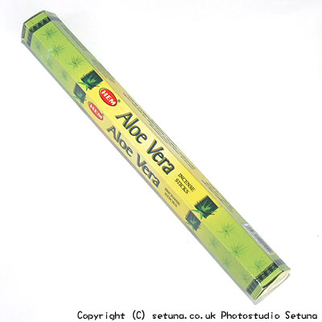

ヘム社/アロエベラ香
HEM Aloe Vera
万能薬として知られるアロエベラ。
そのまま嗅ぐと甘めのバニラによく似た香りです。
火を点けてもやはり同様に甘い香りです。
青リンゴのアイスクリームのような香りとでも云えばいいのでしょうか。
甘酸っぱく優しく広がります。
よく鼻の利く方は少し苦みのある青っぽさを感じとってしまうかもしれませんので、少し離れた所でたくといいでしよう。
また他のお香と一緒に焚いて苦みを消してもいいですね。

＜合わせ炊きできるお香＞
- 「オピウム香」
- アロエベラの補助にいいです。苦みが減り甘さが増します。
- 「イランイラン香」
- 同上
- 「ヴィシュヌ香」
- 爽やかなレモンミルクのような香りになります。
- 「サイババ香」
- 薬臭さが無くなり青リンゴのすっぱさが加わったような爽やか系のまったりとした甘い香りになります。
- 「アーモンド香」
- アーモンドミルクのような甘い香りになります。
- 「ガネーシャ香」
- ミックスジュースに似たおいしそうな甘い香りになります。
- 「ハヌマン香」
- 力強さが増すと云えばいいのでしょうか。そのままの香りがグレードアップします。
その他多岐に渡るため、色々試してみると楽しいと思います。
一つ前のページへ戻る